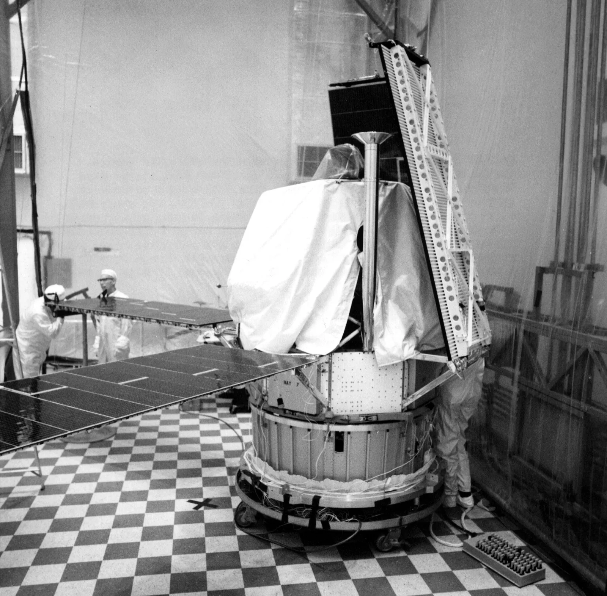

Learning Targets
- Build a first prototype from the approved plan.
- Check rocket fit and stability during construction.
- Document changes, problems, and solutions as they happen.
Focus Question: How do teams turn a design plan into a physical prototype?
Use most of the period for careful construction, with required checkpoints and evidence capture.
The prototype stands on its own, supports the rocket, and includes a clear record of changes made during construction.
Build order affects stability, access, fit, and the amount of rework required later.
Quick class share: Why might decoration be a poor first priority for a prototype?
Build function before decoration.
Establish the base, support the rocket, and verify fit before adding research-informed details.
Use the photo to notice temporary supports, work access, alignment, and controlled work zones.

Do not advance to the next layer until the current one performs its job.
The launch pad must stand on its own.
The rocket must sit securely without tipping or collapsing.
Add realistic details after the main structure works.
The plan guides the work, but the notebook records what actually happened.
Choose the strongest next step before opening the answer.
Continuing would create unreliable evidence and could damage the prototype. Pause, document, revise, and check the result.
A quick checkpoint prevents a finished-looking prototype that cannot perform.
Document the prototype as it exists at the end of build day.
Launch Pad Testing & Improvement
Open Lesson 0.10Use only the files and references that support today’s work.
Google Slides-friendly 16:9 lesson deck with question slides followed by separate answer-reveal slides.
Use this structure to organize build photos, changes, problems, and next steps.
Return to the IED course hub for units, resources, certifications, and current course information.